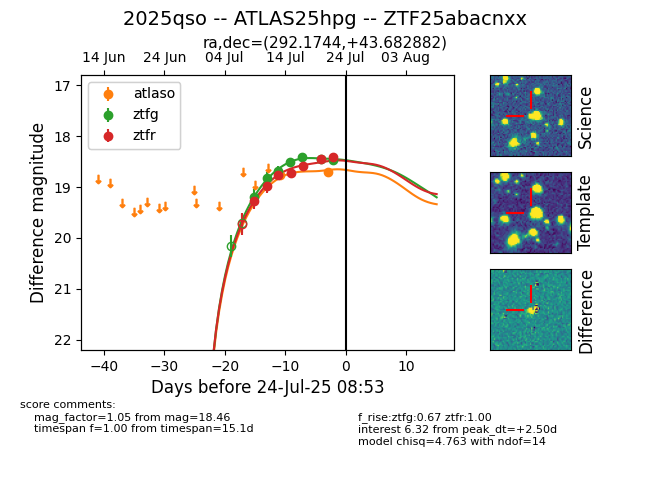

Target ZTF25abacnxx at 2025-07-24 08:53, see:
FINK: fink-portal.org/ZTF25abacnxx
Lasair: lasair-ztf.lsst.ac.uk/objects/ZTF25abacnxx
ALeRCE: alerce.online/object/ZTF25abacnxx
TNS: wis-tns.org/object/2025qso
YSE: ziggy.ucolick.org/yse/transient_detail/2025qso
alt names
ZTF25abacnxx (ztf,fink)
2025qso (tns,yse)
ATLAS25hpg (atlas)
coordinates:
equatorial (ra, dec) = (292.1744,+43.68288)
galactic (l, b) = (76.0426,+12.16669)
photometry
last atlaso=18.70, ztfg=18.46, ztfr=18.40
2 atlaso, 7 ztfg, 7 ztfr detections
